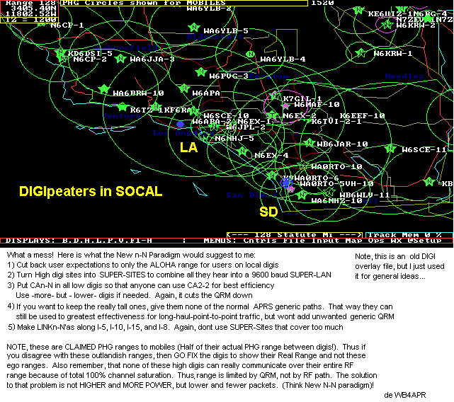
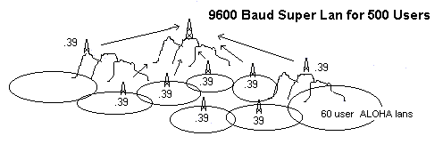
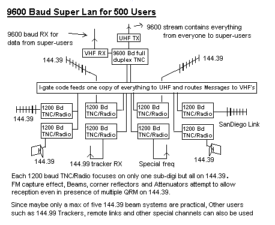
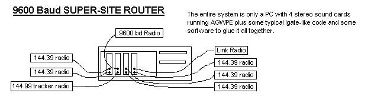

This page was written in 2005 while trying to come up with new ideas for handling large congested areas. The success of the New-N paradigm was so good that these ideas were never implemented. THey are retained here for historical purposes.
SUMMARY: This pages muses how SUPER-SITES could be used to increase the coverage and user area from the 60 ALOHA limit for typical multi-hop 1200 baud to as many as 180 stations for a SUPER-LAN with UHF output or even 480 or more if operating at 9600 baud.
Local users still use 1200 baud on 144.39 within their ALOHA limit on VHF to their nearest 60 local users. But clusters of these ALOHA LAN's can be combined into SUPER-SITES that listen to all the lowere-tier digis and combine what they hear into a single full-duplex UHF output. For users willing to operate at 9600 baud, almost 1000 can be handled. Users can operate normally on 144.39 and see their local ALOHA area, or operate cross band by tuning in the UHF downlink from the SUPER-SITE, and see everything. Super-Users are typically fixed stations with fixed gain antennas pointed at the SuperSite since it might be some distance away. Even if 9600 baud is used, the D7 and D700 radio are perfect Super-User systems at 9600 baud for FIXED stations and portable stations. But do not think that it will ever make any sense to try to use one in APRS mode to the front panel screen while moble. (see discussion later). This SUPER-SITE system is only intended for large screen displays and communications over wider areas than normally possible on the 1200 baud ALOHA limited system.

Just to present a hypothetical visualization of the potential of this kind of supersite, the above map shows how it is geographically best situated to make the best use of this kind of two-tier system. Of course PHG circles are just circles and in the real world there are all kinds of blockages and black holes. But the PHG circles do show which sites could be super-sites, since the SUPER-SITE only has to hear the other digis, it does not have to hear the users! Note: These PHG circles are the reliable range to mobiles. The FIXED-site ranges are actually double what are shown here.

There are all kinds of advantages of the SUPER-SITE:
In fact, you will notice that the combined effect of just going cross band, eliminating one hop, and amortizing TXD's can multiply the size of an ALOHA LAN by a great amount over the maximum possible 60 station typical multi-hop ALOHA (remember, the 60 user ALOHA can only be achieved with all stations direct and all hearing each other, so a real 1200 baud system actually performs at much less than 60). We can gain so much capacity by reducing hop count that the hard part will be how to find that many users on RF to be able to combine. Changing some of the RF receivers to links to distant other areas and Super-Sites could even be supported.

ANTENNA AND RF DESIGN: It will take some interesting and challenging design of antennas at the supersite, but some of the beams can be put at ground level or over the other side of the hill through hundreds of feet of coax, since sensitivity is not an issue at this supersite, but beam directivity is paramount. Also, corner Reflectors are easy to build and have excellent front-to back directivity. Remember, it only takes about 10 dB differention between signals for the FM capture effect to assure a good receive in the intended direction even though there is other QRM on the channel. This use of directional antennas is exactly how the Cell phone industry packs in more users once they have saturated with omnis.
ROUTER SOFTWARE: Notice also that the central router PC that interfaces to all these TNC's is no different than a typical IGate. It feeds one copy of everything it hears to the UHF super-site channel. It maintians a local list for each low-tier digi and then routes any messages or acks between the needed TNC's. One other thing it does is to bundle groups of packets into 7-packet UHF TX bursts with 300 ms pauses (at 1200 baud) to allow for user TNC's to transmit. At 9600 baud a 0.1 seccond pause is needed to make sure not to overload the RX buffers in the D700 and D7 radios when operating at 9600 baud. This is only a 10% penalty to assure full functionality of this very common APRS radio.

Wes points out that a PC and 2 stereo sound cards can replace 4 of the needed TNC's. I wonder if 4 sound cards can do the entire job of 8 TNC's? If so, then it is only takes a PC and a bunch of radios to do this! And only 1 Watt HT's can suffice since they only have to communicate with the other digis, not the users. (but at such a high site, intermod might make such simple trasnceivers useless) though the attenuators might reduce most signals to managable levels....
TIMING: One of the most important aspects of the ROUTER software will be to bundle packets into bunches of 7 at a time with at least a 300 ms (at 1200) or 100 ms drop before the next bundle. This is important for two reasons:
.....Remember that AX.25 adds as much as 20% or more overhead to every packet
LOW-TIER DIGIS: Notice that no coordination or cooperation of the low-tier digis is needed. However, to live up to the full potential of APRS in this area, the New n-N Paradigm must be implemented first or this is a waste of time. This is necessary whether or not this super-site is ever built, because reducing the QRM and getting everyone to drop back and operate only within their local ALOHA range is the only way to assure end user reliability. See the New n-N Paradigm details.
USING THE D-700 or D7: Of course any radio that can operate cross band can be used at 1200 baud, but at 9600, the D7 and D700 are perfect for FIXED site 9600 baud Super-Users since they have the built-in TNC, operate at 9600 baud and can work in cross-band mode. But the only way to make sense of this RF feed of over 300 potential users is to be runnning in PACKET mode and displaying the data on a PC.
It makes no sense to try to use these radios in APRS mode as a Super-User while mobile for many reasons as enumerated below:
Of course, the mobile user with a LAPTOP in the car can monitor the 9600 baud channel if he is close enough to make up for all the disadvantages, and of course, if he stops the car, and points a beam at the Super-Site and uses a laptop, then he can quickly become a Super-User with no penalty.
TXD DELAY: Note that the 9600 baud Super-User will always want to shorten the default TXD delay of his D7 or D700 radio in order to vastly reduce the overhead when operating at 9600 baud. Either radio can be set to any TXD. But it is important to note that only the TH-D7(g) has the ability to change the TXD while in APRS mode from the APRS front panel menu. But agiain we dont see any proactical applications of trying to use the D7 as a mobile Super-User while in APRS mode anyway...
1296 MHz OPERATION! And lastly, since the 9600 baud D700 radio will probably be an excellent SUPER-USER radio, and since the UHF band might be needed for cross-LAN links, the SUPER-SITE owner might instead decide to put the SUPER-DIGI output on 1296! This is just fine, because the D700 receives on the 1296 band too! Thus the only person that has to purchase a 1296 MHz transmitter is the super-site. Everyone else uses their D700 just fine. And since they are fixed location users, the small high gain beams at 1296 are easy to use. This opens up the 440 band for cross links between Super Sites while every channel continues to work full time full duplex with no interference. Just a thought...
POST-SCRIPT: Remember, this SUPER-SITE cocept began as a way to use UHF and 9600
baud to get to an order of magnitude increase in throughpput for APRS. But during the course
of this analysis, it soon became clear that an order of magnitude could already be obtained
by simply eliminating the exponential dupes created by each hop, going to UHF, going
full duplex and amortizing the TX delays. In fact, in very high density areas, such as
the LA Basin, where over 300 users are within 100 miles of 10,000 foot digis that
can cover the entire area direct, it is possible to get a throughput for all 300
users using this concept at 1200 baud with no first-tier digis at all!
See FIXING-LA
You are visitor number: bazillion... Since 6 Jan 2004..